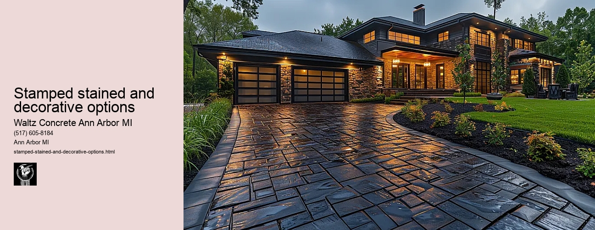

News
Concrete Driveway Installation Ann Arbor Mi
Concrete Driveway Installation Ann Arbor Mi
Choosing the right contractor for installation
Cost of concrete driveway installation in Ann Arbor
Permit requirements for driveway installation in Ann Arbor
The process and timeline of concrete driveway installation
Different types of concrete used in driveways
Maintenance and Repair of Concrete Driveways in Ann Arbor Mi
Maintenance and Repair of Concrete Driveways in Ann Arbor Mi
Preventive maintenance tips for durability
Common causes for concrete driveway damage
Professional companies offering repair services in Ann Arbor
Doityourself versus professional repairs
Costs associated with repairing a concrete driveway
Designs and Styles of Concrete Driveways in Ann Arbor Mi
Designs and Styles of Concrete Driveways in Ann Arbor Mi
Popular design trends for driveways
Considering climate factors when choosing a design or style
Unique customizations available for concrete driveways
Influence of home architecture on driveway design
Stamped stained and decorative options
Environmental Impact of Concrete Driveways in Ann Arbor Mi
Environmental Impact of Concrete Driveways in Ann Arbor Mi
Carbon footprint associated with concrete production
Use of sustainable materials in concrete driveways
Drainage considerations to reduce environmental impact
Local regulations regarding environmentally friendly driveways
Potential use of permeable or porous pavement
Alternatives to Concrete Driveways in Ann Arbor Mi
Alternatives to Concrete Driveways in Ann Arbor Mi
Asphalt driveways and their proscons
Paver stone driveways and their benefitsdrawbacks
Gravel or crushed stone as an alternative option
Comparing costs between different driveway materials
Resinbound surfaces as emerging technology
About Us
Contact Us

Stamped stained and decorative options
Stamped stained and decorative options
Title: The Allure of Stamped, Stained and Decorative Options in Modern Design
In the ever-evolving realm of design and aesthetics, the appeal of stamped, stained, and decorative options is rapidly gaining momentum. These innovative techniques inject creativity into everyday items and spaces, transforming them into pieces of art that encapsulate both form and function.
Stamped designs have emerged as a popular choice for artists and designers alike. They offer an easy way to replicate a particular pattern or design on various surfaces such as textiles, ceramics, or even concrete. This versatility makes it adaptable to different styles - from vintage to contemporary - thus appealing to a wide range of aesthetic preferences. Moreover, stamping allows for the reproduction of intricate designs with precision and consistency which would be difficult to achieve by hand.
Meanwhile, staining has long been used as an artistic technique but its application in interior design is comparatively new yet highly impactful. It involves infusing surfaces with color while allowing the natural patterns and textures to shine through. This creates a rich visual depth that painting often lacks. From wooden floors stained in warm hues to concrete countertops imbued with earthy tones, stained elements evoke a sense of organic elegance that perfectly balances modernity with timelessness.
Decorative options provide the finishing touches that bring everything together harmoniously. They can range from ornate carvings on furniture to delicate etchings on glassware; these details might seem minor but they do play a significant role in defining the overall ambiance of a space. Furthermore, they allow individuals to express their personal style - whether it's minimalist chic or bohemian cool.
However, choosing between stamped, stained or decorative options isnt about picking one over another; rather its about understanding how each can contribute uniquely towards achieving your desired look. For instance, consider using stamped patterns for larger surface areas like walls or floors then complement this with smaller decorative accents such as throw pillows or vases. For a more rustic appeal, stained wooden elements paired with stamped metal fixtures might do the trick.
In conclusion, the use of stamped, stained and decorative options can greatly enhance design aesthetics. They offer an avenue for creativity and personal expression whilst simultaneously adding value to everyday items and spaces. As we continue to explore these techniques in design, it's exciting to envision how they will shape the future aesthetics of our built environment.
Influence of home architecture on driveway design
Stamped stained and decorative options
Frequently Asked Questions
What are stamped stained and decorative options for a concrete driveway in Ann Arbor, Mi?
Stamped stained and decorative options refer to various techniques used to enhance the aesthetic appeal of your concrete driveway. This can include stamping patterns into the wet concrete, staining the dried concrete for a more vibrant color, or adding decorations like pebbles or glass shards into the mix.
How durable are stamped and stained decorative options for my driveway?
When properly installed and sealed, stamped and stained decorative options can extend the lifespan of your driveway by protecting it from weather damage, stains, and abrasion. The durability is comparable to regular concrete driveways.
What maintenance is required for stamped stained and decorative driveways?
These types of driveways require similar maintenance as regular concrete driveways. Regular cleaning with a power washer or hose will keep them looking their best. Additionally, they should be resealed every few years to maintain their color and protect against cracking.
How much do these decorative options cost compared to standard concrete?
The cost for stamped, stained or other decorative finishes generally runs higher than that of standard concrete due to extra labor involved in creating these effects. The exact cost difference depends on factors such as complexity of design, colors used, size of project etc.
Stamped stained and decorative options